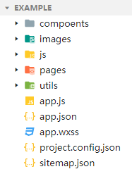
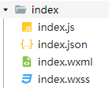

简介
微信小程序(下文简称小程序)的整体与使用脚手架搭建出的vue项目(个人使用vue-cli)有一些类似之处，关注一些差别可以帮助原先vue开发者更快上手小程序。注意，虽然本文从vue出发，但是小程序的框架更类似于多个框架的混合，与vue是不同的框架，本文的比较只是为了帮助开发者快速上手，避免一些常见的错误。
开始
创建微信小程序项目首先需要注册小程序账号(微信公众平台)，在小程序管理页得到appid，下载微信开发者工具，在开发者工具中选择新建项目即可，具体创建流程参照官网指南。创建项目后，开发者工具会提供一个简单的框架，本文从这个框架开始。
项目结构
一个常见的微信小程序结构如下：

在构建一个微信小程序项目时，开发者工具会自动准备好大部分的构架。除了自带的pages、utils文件夹以外，个人根据习惯增加images,js,components文件夹。
pages文件夹用于存放页面，components用于存放组件：区别于vue，小程序组件和页面是不同的，因此，个人习惯创建一个components文件夹用于存放组件，将组件与页面区分开。images等文件夹用于存放不同类型的静态资源，小程序对静态资源的位置没有严格要求，只要在项目目录内即可，所以你也可以创建一个assets文件夹用以存放全部静态资源。utils文件夹用于存放公用的函数。project.config.json文件相当于vue中的package.json，主要进行项目整体配置，包括基础库版本、是否使用es6语法、是否使用npm模块等，这些内容可以在开发者工具-详情-本地设置中修改。需要注意的是，不同与vue，project.config.json中不包含项目引入的依赖库信息等。app.json文件包括引入库、路由设置、导航栏设置、窗口设置等。app.js，小程序生命周期函数、全局数据(类似vuex)等。app.wxss，全局样式。
总体来说，小程序对不同文件的划分会更加清晰，json文件用于配置，js文件专注于逻辑。
页面/组件文件
一个小程序页面的结构如下所示：

可以看到，一个页面/组件从vue常用的.vue单文件，变成了一个包含{wxml,wxss,js,json}四个文件的文件夹。
根据之前整体构架的叙述，我们不难理解各个文件的功能：
| 文件 | 功能 |
|---|---|
| wxml | 结构 |
| wxss | 样式 |
| js | 逻辑 |
| json | 配置 |
值得一提的是，引入第三方库等配置功能集中在.json文件中，js文件则专注于逻辑交互的代码。
小程序中，组件和页面是不同的！
组件要求在json文件中声明components: true，而后在对应json文件中的usingComponents中引入，引入方法与vue中的components一致。其他的组件基本使用与vue项目中一致。有意思的是，在实际代码书写中，我发现一定程度上组件和页面是可以互换的（来自一次小失误，不要这么做！）。
微信官方提供的微信开发者工具，对小程序的开发的支持是我体验过最好的（虽然没有插件、没有补齐等功能）。创建组件/页面，首先在components/pages文件夹内，创建文件夹，再在开发者工具的资源管理器中对文件夹右键，选择新建page/新建component，即可快速创建需要的四个文件。注意，编辑器默认不会为页面/组件创建文件夹。
wxml
小程序中的wxml与html非常类似，使用方法也基本一样，存在的区别主要有：
标签名差别：
view是小程序中最常见的标签名，主要功能与div相同。此外，小程序标题、文本、段落统一为text。这里需要注意的是，小程序对不同的标签提供了不同的基本功能，构建页面时选择不同的标签会有不同的渲染，比如使用view和text在文字处理时就会有不同的渲染，要尽量使用原生标签进行书写。各个标签提供的基本功能也不尽相同，有一些与html有着较大差别（比如image，巨坑）。
同时，小程序提供更多移动端常用的原生组件，如iconpicker等。
具体内容请看官方文档模板语法区别：
小程序同样采用MVVM开发模式，整体提供的功能与vue类似，但是语法和实现却不大相同。与vue相同，数据绑定使用双大括号{{}}`，逻辑控制同样有if、for等等。但是，在小程序中，控制属性使用`wx:`开头，如`v-if`在小程序中就是`wx:for`，动态属性则需要`wx:if="{{...}}"，即在引号内仍需要双大括号进行数据绑定。数据绑定的方式也与vue不同。
小程序的wxml使用中还有很多变化的地方容易踩坑，后续说明。
js
小程序中我们写逻辑主要仍是在.js文件中，与vue类似，小程序每个页面/组件有一个主入口：Page()/Component()。
其中可以使用的参数也非常类似：
data
1
2
3
4
5Page({
data: {
"data名": 默认数值,
},
})事件
page中与data同层，在component中则写在methods中。1
2
3
4
5Page({
clickMe: function() {
this.setData({ msg: "Hello World" })
}
})1
2
3
4
5
6
7Component({
methods: {
clickMe() {
this.setData({ msg: "Hello World" })
}
}
})此外，小程序主要是触摸操作，因此，官方提供了一些移动端常用的页面事件，比如下拉、下拉触底等。
生命周期
小程序页面的生命周期与组件的生命周期不同，但是两者的流程整体与vue中并无太大差异，存在一些名称的差异等。
小程序组件在2.2.3版本库前生命周期书写方法与页面中一样，之后添加了lifetimes字段，现在推荐在lifetimes中声明：1
2
3
4
5Component({
lifetimes: {
attached: function() {}
}
})
wxss
为了适配移动端，wxss中的最大变化就是提供rpx尺寸单位，单位的像素大小根据屏幕宽度进行自适应，与iphone6显示的像素比为1rpx = 0.5px
动态更新
小程序的数据更新与vue中不同，虽然官方文档说是双向绑定，但是本质上来说是 单向绑定 。视图层更新会影响逻辑层更新，同时会影响页面上全部相同绑定value的更新，但是逻辑层的更新不能直接更新视图层。具体来说，就是页面上的数据更新会直接修改data,但是每次data的更新 需要使用setData()进行更新 。
根据小程序的实现，我们必须尽量少的使用setData()
关于动态更新，详见官方文档
总结
由此，从 创建小程序-梳理框架-写第一个页面 需要关注的流程就基本介绍完了，都是微信小程序开发的基础知识，想要更详细的内容请前往 官方文档-指南。下一篇将关注小程序以及页面的配置。